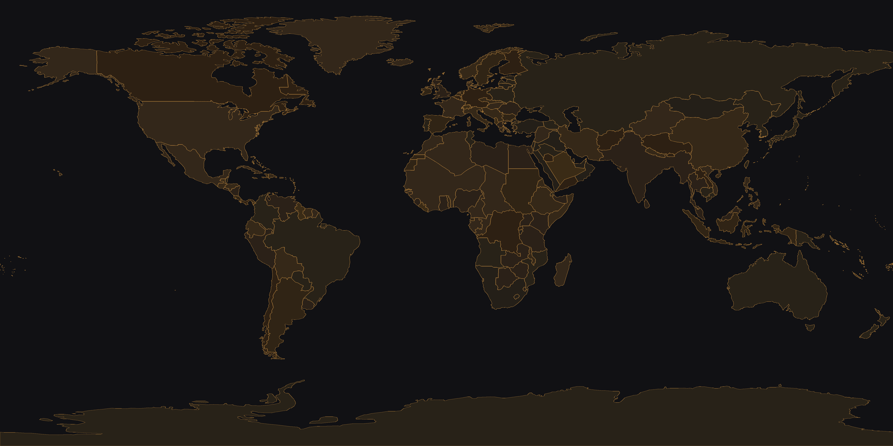
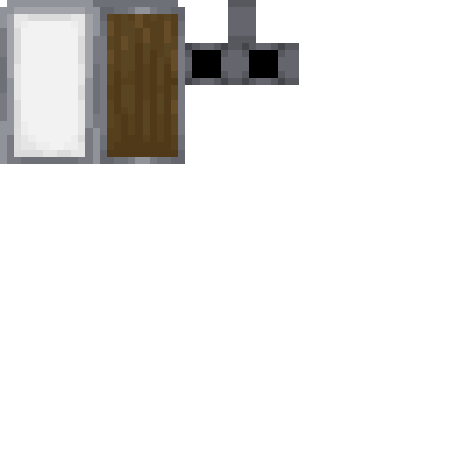
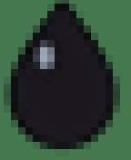
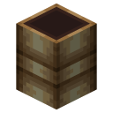
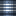
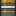
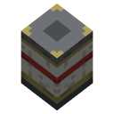
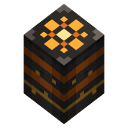
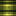

Реальная карта планеты в масштабе 1:2000, страны по историческим границам 1936 года, нефтяная промышленность TFMG и артиллерия Create Big Cannons. Подними свою державу — или разбери чужую по кирпичу.
Не арена и не анархия: живая политическая карта, где каждый чанк принадлежит какой-то державе — а державы принадлежат игрокам.

Вся планета — от Аляски до Австралии — сгенерирована по настоящему рельефу. 102 страны нарезаны по историческим границам 1936 года, внутри — 431 провинция с реальными областями той эпохи. Земля уже поделена: выбирай, за кого играть.

Столица, провинции, границы — всё по-настоящему. Дипломатия, союзы, ультиматумы и войны: историю сезона пишут игроки, а не сценарий.

34 месторождения на местах реальных промыслов 1936 года. Вышки, перегонка, топливо TFMG — у кого нефть, у того и армия на ходу.

Пушки Create Big Cannons — от полевых до осадных, бронетехника и механизмы Create. Всё строится руками, заряжается порохом и стреляет по-настоящему.
Сервер держит собственный мод: механики, которых нет ни в одной сборке — и все они про эпоху, а не про магию.

Рядом рвануло — звон в ушах, глухота, рябь и тряска камеры. Считаются укрытие, шлем, приседание и даже стены помещения. Артиллерия больше не «попал / не попал».

Раскрывается в верхней точке траектории: звезда на парашюте по-настоящему освещает местность и подсвечивает контуры целей. Ночная разведка и корректировка огня.

Восемь цветных разрывов над городом — и ни одной воронки. Для парадов, побед и объявлений войны. Грохот есть, разрушений нет.

Слабее фугаса по блокам, но место разрыва превращается в очаг пожара: языки огня, белые искры термита и восемь секунд ада радиусом шесть блоков.

Почти не трогает постройки — зато выпускает стойкое ядовитое облако, которое ползёт по ветру той же розой ветров, что и погода сезона. Противогазов нет. Бегите.
Кнопка «3×3» прямо в терминале склада Create: крафт из остатков всей сети складов, мгновенно и без посылок. Сервер сам проверяет права, остатки и честность рецепта.
Приложение для Windows — 44 МБ, Java внутри: ставить ничего не нужно. Распакуй архив и запусти AEGIS.
Лаунчер сам скачает сборку (около 315 МБ), проверит каждый файл по контрольной сумме, поставит NeoForge и запустит игру. Отдельный лаунчер Minecraft не нужен.
Старт сезона «1936» — сентябрь 2026: целимся в 12 или 19, точное число объявим заранее. Сервер лаунчер добавит в список сам: до открытия он показан выключенным — так и должно быть.
Заходи, осматривайся на карте и подавай заявку на свою страну сезона.
Термитный, газовый и контузионный — по типу фугаса CBC, но каждый бьёт по-своему. Термит выжигает, газ ползёт по ветру, контузионный выключает гарнизон, не трогая стен.
Крафт прямо из сети складов Create: кнопка «3×3» в стоковом терминале, живые остатки, мгновенный крафт без посылок — с честной проверкой на сервере.
Холостой боеприпас для парадов и объявлений войны: восемь цветных разрывов за три секунды, звуки и частицы родные для CBC — и ноль разрушений.
Звон, глухота, рябь и тряска — сервер считает дозу по 16 лучам с учётом укрытия, шлема и приседания. Промах рядом с окопом теперь тоже работает.
Первый собственный боеприпас AEGIS: звезда на парашюте, настоящий движущийся свет и подсветка целей в радиусе 48 блоков. Ночь перестала прятать.
Испытательная батарея на господствующей высоте: лафет, рычаг «СБОРКА», кнопка «ОГОНЬ» и сундук с боекомплектом. Первые стрельбы — осветительными.